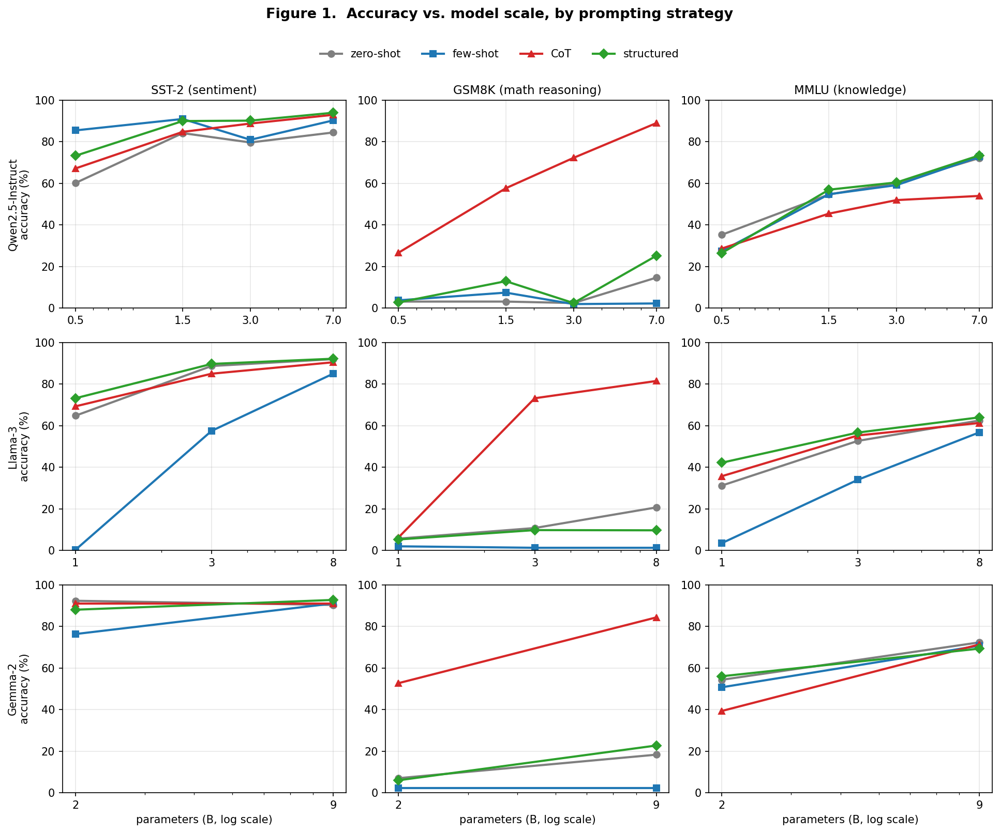
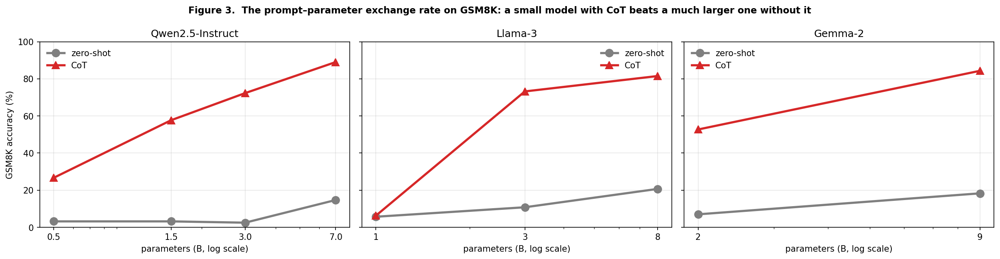
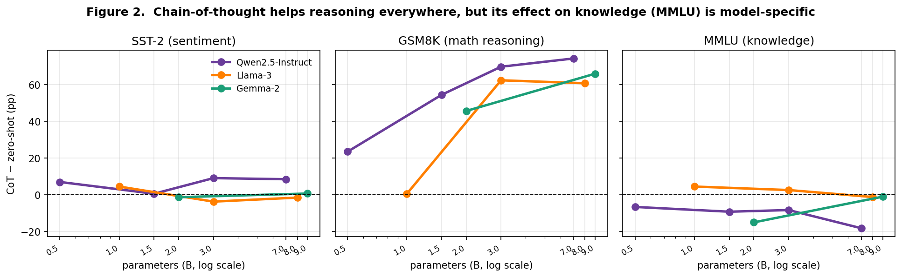

Deploying a language model means choosing both which model and how to prompt it, and these choices compete for the same budget: a larger model costs compute, memory, and latency, while prompt engineering is nearly free but bounded in effect. Prior work establishes the two levers separately — that few-shot ability emerges with scale (Brown et al., 2020), that chain-of-thought helps larger models reason (Wei et al., 2022b; Kojima et al., 2022), and that accuracy follows smooth scaling laws (Kaplan et al., 2020; Hoffmann et al., 2022) — but rarely quantifies how the two trade off against each other on a single, controlled model family.
We ask two questions. RQ1 (exchange rate): how much model scaling does each prompting strategy substitute for, and does this depend on task type? RQ2 (CoT's cost): does the strategy that helps reasoning carry over to other task types, or can it hurt?
Recent large-scale evidence (Sprague et al., 2024) shows chain-of-thought helps mainly on math and symbolic reasoning and adds little on knowledge tasks. We first confirm this in a controlled, same-family, sub-7B setting: a good prompt buys several model tiers on GSM8K yet almost nothing on MMLU, where facts must live in the parameters. Our central new contribution is then to show that one such prompting effect is model-family-specific — across three families, chain-of-thought ranges from actively harming knowledge questions (Qwen2.5, Gemma-2) to helping them (Llama-3), and the direction of the harm's scale-trend itself differs by family (§4.3).
Contributions. (1) Our primary contribution: chain-of-thought's effect on multiple-choice knowledge QA is model-family-specific, with three distinct patterns — CoT degrades MMLU increasingly with scale in Qwen2.5 (−7 to −17pp), harms the small model but fades with scale in Gemma-2 (−15pp → −1pp), and is neutral-to-helpful in Llama-3 — verified against extraction and metric artifacts. (2) A controlled, same-family confirmation, in the under-studied sub-7B locally-quantized regime, of the recent result (Sprague et al., 2024) that prompting (chiefly CoT) substitutes for scale on reasoning but not on knowledge, which we quantify as a prompt–parameter exchange rate. (3) Statistical rigor uncommon at this scale: three model families, up to two seeds (n = 300–600 per condition), Wilson confidence intervals, and Holm-adjusted McNemar tests. (4) A reproducible single-laptop harness, with code and prompts released.
Prompting and scale. In-context few-shot learning emerges with model size (Brown et al., 2020); chain-of-thought prompting improves reasoning primarily in larger models (Wei et al., 2022b; Kojima et al., 2022). The interaction between few-shot benefit and model size has been studied directly (San Joaquin & Haroen, 2022), and recent work shows small models struggle to exploit long reasoning chains (Li et al., 2025). Most directly, Sprague et al. (2024) show, across many models and datasets, that CoT's gains concentrate in math and symbolic reasoning and are minimal on knowledge and language-understanding tasks; we confirm this in a controlled same-family, sub-7B setting and extend it by showing one such effect can be model-family-specific. None of these reports a quantitative prompt-as-parameters exchange rate on a controlled same-family ladder, nor the family-specific knowledge-QA degradation we observe.
Scaling and emergence. Performance follows power-law scaling (Kaplan et al., 2020; Hoffmann et al., 2022). Some abilities appear abruptly with scale (Wei et al., 2022a), though this "emergence" may partly be an artifact of discontinuous metrics (Schaeffer et al., 2023) — a concern we address directly in §4.4.
Format and prompt sensitivity. Enforced output formats can degrade reasoning (Tam et al., 2024); meaning-preserving format changes swing accuracy substantially and the sensitivity persists across scale (Sclar et al., 2023); few-shot example ordering alone can dominate performance (Lu et al., 2022). GSM8K itself may reflect brittle pattern-matching (Mirzadeh et al., 2024). Our closest points of comparison are Tam et al. (2024), who study format restrictions but across a heterogeneous set of models rather than a controlled size ladder, and San Joaquin & Haroen (2022); neither frames results as an exchange rate nor contrasts knowledge against multi-step reasoning as we do.
Models. Three instruction-tuned families swept across parameter count with 4-bit quantization held constant, so size is the only within-family variable: Qwen2.5-Instruct at 0.5B / 1.5B / 3B / 7B, Llama-3 at 1B / 3B / 8B, and Gemma-2 at 2B / 9B. We run locally via MLX on an Apple M4 (16GB), one model resident at a time.
Tasks. SST-2 (binary sentiment), MMLU (4-way multiple-choice knowledge, stratified across 57 subjects), GSM8K (grade-school multi-step arithmetic). n = 300 examples per condition. Qwen2.5 and Llama-3 were evaluated at two seeds (42 and 43; pooled n = 600); Gemma-2 was evaluated at one seed (42; n = 300). Confidence intervals are reported in Appendix C.
Strategies. Zero-shot; few-shot (fixed hand-written exemplars); CoT (reasoning followed by a parsed final answer); structured (JSON-only output). Full templates in Appendix A.
Decoding and scoring. Greedy decoding (temperature 0), deterministic. Task-specific answer extraction: numeric match for GSM8K, exact label/letter match otherwise.
Statistics. Accuracy with 95% Wilson score intervals (≈ ±5–6pp at n = 300); paired McNemar tests (continuity-corrected, Holm-adjusted) for within-model strategy comparisons. We define the exchange rate operationally: prompting at size S "matches" scaling if the best-prompt accuracy at S meets or exceeds zero-shot accuracy at the next-larger size.
Robustness. To address the concern that exact-match exaggerates discontinuities (Schaeffer et al., 2023), for GSM8K we additionally record numeric-present (whether the correct value appears anywhere in the output) and the relative error of the committed answer; and we re-extract answers from full (untruncated) outputs (§4.4).

| Task | Model | zero-shot | few-shot | CoT | structured |
|---|---|---|---|---|---|
| SST-2 | Qwen-0.5B | 62.0 | 85.3 | 69.7 | 72.0 |
| Qwen-1.5B | 86.7 | 92.7 | 84.3 | 91.0 | |
| Qwen-3B | 80.7 | 81.7 | 89.0 | 90.7 | |
| Qwen-7B | 87.3 | 91.0 | 94.7 | 95.3 | |
| MMLU | Qwen-0.5B | 32.7 | 26.3 | 25.3 | 25.0 |
| Qwen-1.5B | 57.3 | 55.3 | 47.3 | 60.0 | |
| Qwen-3B | 59.7 | 59.7 | 49.3 | 60.0 | |
| Qwen-7B | 72.3 | 74.0 | 55.3 | 73.7 | |
| GSM8K | Qwen-0.5B | 4.3 | 4.0 | 25.3 | 2.3 |
| Qwen-1.5B | 2.3 | 8.3 | 55.7 | 14.3 | |
| Qwen-3B | 2.3 | 1.7 | 70.7 | 2.7 | |
| Qwen-7B | 14.3 | 2.7 | 88.0 | 24.0 |
Table 1. Qwen2.5 accuracy (%). Green = best strategy for that row; red = CoT underperforms zero-shot.
| Task | Model | zero-shot | few-shot | CoT | structured |
|---|---|---|---|---|---|
| SST-2 | Llama-1B | 67.3 | 0.7 | 71.0 | 72.0 |
| Llama-3B | 89.3 | 60.0 | 86.0 | 90.0 | |
| Llama-8B | 92.0 | 85.0 | 90.3 | 91.7 | |
| MMLU | Llama-1B | 31.3 | 4.0 | 37.3 | 38.3 |
| Llama-3B | 52.3 | 35.0 | 56.3 | 57.3 | |
| Llama-8B | 60.7 | 55.0 | 58.7 | 62.3 | |
| GSM8K | Llama-1B | 6.3 | 1.3 | 7.3 | 6.7 |
| Llama-3B | 10.0 | 1.3 | 74.7 | 10.7 | |
| Llama-8B | 22.7 | 1.0 | 79.0 | 9.7 |
Table 2. Llama-3 accuracy (%). Note few-shot's collapse (red) and that CoT does not underperform zero-shot on MMLU here — the key cross-family divergence.
| Task | Model | zero-shot | few-shot | CoT | structured |
|---|---|---|---|---|---|
| SST-2 | Gemma-2B | 92.3 | 76.3 | 91.0 | 88.0 |
| Gemma-9B | 90.3 | 91.0 | 91.0 | 92.7 | |
| MMLU | Gemma-2B | 54.3 | 50.7 | 39.3 | 56.0 |
| Gemma-9B | 72.3 | 70.7 | 71.3 | 69.3 | |
| GSM8K | Gemma-2B | 7.0 | 2.3 | 52.7 | 6.0 |
| Gemma-9B | 18.3 | 2.3 | 84.3 | 22.7 |
Table 3. Gemma-2 accuracy (%, seed 42, n = 300). On MMLU, CoT underperforms zero-shot (red) by −15pp at 2B but only −1pp at 9B — the harm fades with scale, unlike Qwen (worsens) or Llama (neutral).

GSM8K — prompting ≫ scaling. CoT at every size exceeds zero-shot at the next size up. A 1.5B Qwen with CoT outperforms a 7B Qwen without it by 41pp — prompting worth roughly a 5× parameter increase — and the pattern repeats in Llama and Gemma (Gemma-2B + CoT 52.7% beats Gemma-9B zero-shot 18.3%). Crucially this is CoT-specific: few-shot and structured remain near the floor, because answer-only or format-constrained prompts suppress the reasoning the task requires. (Llama-1B is an instructive floor: too weak to reason even with CoT.)
MMLU — scaling is irreplaceable. The best strategy improves on zero-shot by at most a few points (≤2.7pp in Qwen, ≤7pp in Llama, ≤1.7pp in Gemma). Accuracy rises with parameters regardless of prompt. Knowledge either resides in the weights or it does not. This reasoning-versus-knowledge split confirms, in a controlled small-model setting, the broad pattern reported by Sprague et al. (2024).
SST-2 — prompting helps moderately, with best-strategy gains of 6–23pp, often equivalent to about one model tier.

In Qwen2.5, the same CoT that dominates GSM8K degrades MMLU at every size — by 7.4pp (0.5B), 10.0pp (1.5B), 10.4pp (3B), and 17.0pp (7B) — with harm growing in scale. We interpret this as over-reasoning on multiple-choice items: free-form reasoning creates opportunities to argue away the correct option (cf. Tam et al., 2024). Notably, a recent meta-analysis finds CoT roughly neutral on MMLU on average (Sprague et al., 2024), so an active, scale-increasing degradation within a single family is a stronger and more specific effect than previously reported.
The three families show three distinct patterns. In Llama-3, CoT on MMLU is neutral-to-helpful (+6.0pp at 1B, +4.0pp at 3B, −2.0pp at 8B). In Gemma-2, CoT harms the small model (−15.0pp at 2B) but the harm fades with scale to near-zero (−1.0pp at 9B) — the opposite scale-trend to Qwen, where the harm grows. So across three families CoT's effect on knowledge QA ranges from helpful (Llama) to harmful-and-worsening (Qwen) to harmful-but-improving (Gemma). We therefore report it as a model-family-dependent phenomenon, not a universal law, while the broader claim — that prompting buys little on knowledge regardless of strategy (§4.2) — holds in all three families. This divergence is exactly what a single-family study would have over-generalized.
Conversely, structured (JSON) output is not a universal penalty in any family — it is best-in-class on SST-2 (Qwen-7B: 95.3; Llama-8B: 91.7; Gemma-9B: 92.7) and competitive on MMLU, and only clearly harmful on GSM8K, refining the "format tax" of Tam et al. (2024) to a reasoning-specific effect. We also observe that few-shot is markedly less reliable in Llama-3 than Qwen2.5 (e.g. GSM8K ≈1%, SST-2-1B 0.7%), consistent with strong family-specific sensitivity to exemplar formatting (Sclar et al., 2023; Lu et al., 2022).
Continuous metric (GSM8K). Numeric-present tracks exact-match closely rather than diverging (Qwen-0.5B CoT 25.3 / 39.0; Qwen-7B CoT 88.0 / 91.0), and the median relative error of the committed answer is 0.000 for CoT at 1.5B and above. The low small-model scores are not an artifact of a discontinuous metric (Schaeffer et al., 2023).
Extraction audit (MMLU CoT). Re-extracting answers from full outputs, the extraction-failure rate is only 2–4%; scoring only cleanly-parsed answers, Qwen CoT still trails zero-shot by 6–16pp at every size. The CoT-hurts-knowledge effect in Qwen is real, not a parsing failure.
Our central observation is that a single prompting technique can help one model family and hurt another on the same task: chain-of-thought lifts all three families on math, but on multiple-choice knowledge it degrades Qwen (increasingly with scale), harms then largely spares Gemma (the penalty fades from −15pp at 2B to −1pp at 9B), and leaves Llama unharmed. Across three families we see three distinct behaviours, and the scale-trend itself differs — the harm grows for Qwen but shrinks for Gemma. Because each pattern is consistent across sizes within its family, it is unlikely to be noise; still, three families is a small sample, so we treat the specific taxonomy as an observation to be tested more broadly, not a settled law. A plausible mechanism is over-reasoning: free-form deliberation gives a model room to talk itself out of a correct option, and families differ both in how susceptible they are and in whether that susceptibility grows or shrinks with scale.
The broader prompting-versus-scale pattern we confirm — prompting substitutes for scale on reasoning but barely on knowledge (Sprague et al., 2024) — has a clean intuition: reasoning tasks hold latent capability a prompt can elicit, whereas a fact is either in the weights or it is not, so only scale moves it. The practical corollary: under a fixed budget, spend on prompting for reasoning workloads and on parameters for knowledge workloads — and do not assume chain-of-thought is safe on knowledge questions, because whether it helps depends on the model.
In a controlled three-family sweep, we find that chain-of-thought's effect on knowledge questions is model-dependent, with three distinct patterns — actively harmful and worsening with scale for Qwen2.5, harmful at small scale but fading for Gemma-2, and neutral-to-helpful for Llama-3 — a divergence a single-family study would have missed. This sits within a broader pattern, consistent with prior large-scale evidence (Sprague et al., 2024), that prompting substitutes for scale on reasoning but barely on knowledge. The lever you should pull depends on the task and the model; whether a prompt that helps one model helps another is not safe to assume.
This is independent research by the author. Experimental code, statistical analysis, figure generation, and an initial manuscript draft were produced with the assistance of an AI coding assistant (Anthropic's Claude); the author reviewed and verified the methods, results, and claims and takes full responsibility for them. [Complete truthfully before submission: name any teacher or mentor who advised or reviewed the work, state which parts you developed yourself, and adapt this disclosure to the target venue's AI-use policy.] Code and data are available at github.com/ssamalsamir/prompting-vs-model-scaling.
Each prompt below is wrapped in the model's chat template (apply_chat_template,
add_generation_prompt=True) before generation. {...} denotes the
inserted example.
zero-shot: Classify the sentiment of the following sentence as exactly
'positive' or 'negative'.
Sentence: {sentence}
Sentiment:
few-shot: Classify the sentiment as 'positive' or 'negative'.
[3 exemplars: ("The film is a masterpiece of visual storytelling." -> positive),
("I fell asleep twice. Complete waste of time." -> negative),
("A quietly moving portrait of grief and resilience." -> positive)]
Sentence: {sentence}
Sentiment:
CoT: Identify the key sentiment signals in the sentence, reason through them,
then classify as 'positive' or 'negative'. End your response with
'Final answer: positive' or 'Final answer: negative'.
Sentence: {sentence}
Reasoning:
structured: Classify sentiment. Respond ONLY with valid JSON:
{"sentiment": "positive"} or {"sentiment": "negative"}.
Sentence: {sentence}
JSON:
zero-shot: Solve the following math problem. Give only the final number as your
answer.
Problem: {question}
Answer:
few-shot: 2 worked examples shown as Problem / Answer (final number only),
then Problem: {question}
Answer:
CoT: 2 worked examples shown as Problem / Reasoning / Answer, then
"Solve ... step by step. End with 'Answer: <number>'."
Problem: {question}
Reasoning:
structured: Solve this math problem. Respond ONLY with valid JSON:
{"answer": "<number>"}.
Problem: {question}
JSON:
zero-shot: Answer the following multiple choice question. Respond with only the
letter A, B, C, or D.
Question: {q}
{A..D options}
Answer:
few-shot: 4 exemplars (answers spread across A/B/C/D to avoid position bias),
then Question: {q}
{options}
Answer:
CoT: "Think through each option carefully, then end your response with
'Final answer: A' (or B, C, D)."
Question: {q}
{options}
Reasoning:
structured: Respond ONLY with valid JSON: {"answer": "A"} (or B, C, D).
Question: {q}
{options}
JSON:
Greedy decoding (temperature 0); answers parsed from raw model text as follows.
sentiment field. CoT: regex
final answer[:\s]+(positive|negative). Otherwise: scan the last 60 characters,
then the whole output, for "positive"/"negative".answer. Otherwise: first match of
answer[:\s]+$?(number), then a trailing = $number, then the last
number in the text (excluding bare years 2020-2026). Scored by numeric equality (tolerance 0.01).answer. CoT: regex
final answer[:\s]+([A-D]). Otherwise: a lone A-D letter on the last non-empty line,
then the last A-D letter anywhere. Scored by exact letter match.Extraction failures count as incorrect. An audit of MMLU-CoT on full (untruncated) outputs found a 2-4% extraction-failure rate, with the reported effects unchanged (§4.4).
Qwen2.5 and Llama-3 are pooled over seeds 42 and 43 (n = 600 per condition); Gemma-2 uses seed 42 (n = 300). McNemar tests are continuity-corrected and Holm-adjusted within each model×task, comparing each strategy to zero-shot on the same items.
| Family | Model | Task | Strategy | n | Acc (%) | 95% CI |
|---|---|---|---|---|---|---|
| Qwen2.5-Instruct | qwen-0.5b | sst2 | zero-shot | 600 | 60.2 | [56.2, 64.0] |
| Qwen2.5-Instruct | qwen-0.5b | sst2 | few-shot | 600 | 85.5 | [82.5, 88.1] |
| Qwen2.5-Instruct | qwen-0.5b | sst2 | CoT | 600 | 67.2 | [63.3, 70.8] |
| Qwen2.5-Instruct | qwen-0.5b | sst2 | structured | 600 | 73.3 | [69.7, 76.7] |
| Qwen2.5-Instruct | qwen-0.5b | gsm8k | zero-shot | 600 | 3.2 | [2.0, 4.9] |
| Qwen2.5-Instruct | qwen-0.5b | gsm8k | few-shot | 600 | 3.8 | [2.6, 5.7] |
| Qwen2.5-Instruct | qwen-0.5b | gsm8k | CoT | 600 | 26.7 | [23.3, 30.3] |
| Qwen2.5-Instruct | qwen-0.5b | gsm8k | structured | 600 | 2.8 | [1.8, 4.5] |
| Qwen2.5-Instruct | qwen-0.5b | mmlu | zero-shot | 600 | 35.3 | [31.6, 39.2] |
| Qwen2.5-Instruct | qwen-0.5b | mmlu | few-shot | 600 | 27.5 | [24.1, 31.2] |
| Qwen2.5-Instruct | qwen-0.5b | mmlu | CoT | 600 | 28.7 | [25.2, 32.4] |
| Qwen2.5-Instruct | qwen-0.5b | mmlu | structured | 600 | 26.5 | [23.1, 30.2] |
| Qwen2.5-Instruct | qwen-1.5b | sst2 | zero-shot | 600 | 84.2 | [81.0, 86.9] |
| Qwen2.5-Instruct | qwen-1.5b | sst2 | few-shot | 600 | 91.0 | [88.4, 93.0] |
| Qwen2.5-Instruct | qwen-1.5b | sst2 | CoT | 600 | 84.8 | [81.7, 87.5] |
| Qwen2.5-Instruct | qwen-1.5b | sst2 | structured | 600 | 90.0 | [87.3, 92.2] |
| Qwen2.5-Instruct | qwen-1.5b | gsm8k | zero-shot | 600 | 3.2 | [2.0, 4.9] |
| Qwen2.5-Instruct | qwen-1.5b | gsm8k | few-shot | 600 | 7.5 | [5.7, 9.9] |
| Qwen2.5-Instruct | qwen-1.5b | gsm8k | CoT | 600 | 57.7 | [53.7, 61.6] |
| Qwen2.5-Instruct | qwen-1.5b | gsm8k | structured | 600 | 13.0 | [10.5, 15.9] |
| Qwen2.5-Instruct | qwen-1.5b | mmlu | zero-shot | 600 | 54.7 | [50.7, 58.6] |
| Qwen2.5-Instruct | qwen-1.5b | mmlu | few-shot | 600 | 54.8 | [50.8, 58.8] |
| Qwen2.5-Instruct | qwen-1.5b | mmlu | CoT | 600 | 45.5 | [41.6, 49.5] |
| Qwen2.5-Instruct | qwen-1.5b | mmlu | structured | 600 | 57.0 | [53.0, 60.9] |
| Qwen2.5-Instruct | qwen-3b | sst2 | zero-shot | 600 | 79.7 | [76.3, 82.7] |
| Qwen2.5-Instruct | qwen-3b | sst2 | few-shot | 600 | 81.0 | [77.7, 83.9] |
| Qwen2.5-Instruct | qwen-3b | sst2 | CoT | 600 | 88.8 | [86.1, 91.1] |
| Qwen2.5-Instruct | qwen-3b | sst2 | structured | 600 | 90.2 | [87.5, 92.3] |
| Qwen2.5-Instruct | qwen-3b | gsm8k | zero-shot | 600 | 2.5 | [1.5, 4.1] |
| Qwen2.5-Instruct | qwen-3b | gsm8k | few-shot | 600 | 2.0 | [1.1, 3.5] |
| Qwen2.5-Instruct | qwen-3b | gsm8k | CoT | 600 | 72.3 | [68.6, 75.8] |
| Qwen2.5-Instruct | qwen-3b | gsm8k | structured | 600 | 2.5 | [1.5, 4.1] |
| Qwen2.5-Instruct | qwen-3b | mmlu | zero-shot | 600 | 60.3 | [56.4, 64.2] |
| Qwen2.5-Instruct | qwen-3b | mmlu | few-shot | 600 | 59.2 | [55.2, 63.0] |
| Qwen2.5-Instruct | qwen-3b | mmlu | CoT | 600 | 52.0 | [48.0, 56.0] |
| Qwen2.5-Instruct | qwen-3b | mmlu | structured | 600 | 60.5 | [56.5, 64.3] |
| Qwen2.5-Instruct | qwen-7b | sst2 | zero-shot | 600 | 84.5 | [81.4, 87.2] |
| Qwen2.5-Instruct | qwen-7b | sst2 | few-shot | 600 | 90.3 | [87.7, 92.4] |
| Qwen2.5-Instruct | qwen-7b | sst2 | CoT | 600 | 93.0 | [90.7, 94.8] |
| Qwen2.5-Instruct | qwen-7b | sst2 | structured | 600 | 94.0 | [91.8, 95.6] |
| Qwen2.5-Instruct | qwen-7b | gsm8k | zero-shot | 600 | 14.7 | [12.1, 17.7] |
| Qwen2.5-Instruct | qwen-7b | gsm8k | few-shot | 600 | 2.3 | [1.4, 3.9] |
| Qwen2.5-Instruct | qwen-7b | gsm8k | CoT | 600 | 89.0 | [86.2, 91.3] |
| Qwen2.5-Instruct | qwen-7b | gsm8k | structured | 600 | 25.2 | [21.9, 28.8] |
| Qwen2.5-Instruct | qwen-7b | mmlu | zero-shot | 600 | 72.2 | [68.4, 75.6] |
| Qwen2.5-Instruct | qwen-7b | mmlu | few-shot | 600 | 72.8 | [69.1, 76.2] |
| Qwen2.5-Instruct | qwen-7b | mmlu | CoT | 600 | 54.0 | [50.0, 57.9] |
| Qwen2.5-Instruct | qwen-7b | mmlu | structured | 600 | 73.5 | [69.8, 76.9] |
| Llama-3 | llama-1b | sst2 | zero-shot | 600 | 64.8 | [60.9, 68.5] |
| Llama-3 | llama-1b | sst2 | few-shot | 600 | 0.3 | [0.1, 1.2] |
| Llama-3 | llama-1b | sst2 | CoT | 600 | 69.3 | [65.5, 72.9] |
| Llama-3 | llama-1b | sst2 | structured | 600 | 73.2 | [69.5, 76.6] |
| Llama-3 | llama-1b | gsm8k | zero-shot | 600 | 5.7 | [4.1, 7.8] |
| Llama-3 | llama-1b | gsm8k | few-shot | 600 | 2.0 | [1.1, 3.5] |
| Llama-3 | llama-1b | gsm8k | CoT | 600 | 6.3 | [4.6, 8.6] |
| Llama-3 | llama-1b | gsm8k | structured | 600 | 5.3 | [3.8, 7.4] |
| Llama-3 | llama-1b | mmlu | zero-shot | 600 | 31.2 | [27.6, 35.0] |
| Llama-3 | llama-1b | mmlu | few-shot | 600 | 3.5 | [2.3, 5.3] |
| Llama-3 | llama-1b | mmlu | CoT | 600 | 35.7 | [31.9, 39.6] |
| Llama-3 | llama-1b | mmlu | structured | 600 | 42.2 | [38.3, 46.2] |
| Llama-3 | llama-3b | sst2 | zero-shot | 600 | 88.7 | [85.9, 91.0] |
| Llama-3 | llama-3b | sst2 | few-shot | 600 | 57.5 | [53.5, 61.4] |
| Llama-3 | llama-3b | sst2 | CoT | 600 | 85.0 | [81.9, 87.6] |
| Llama-3 | llama-3b | sst2 | structured | 600 | 89.7 | [87.0, 91.9] |
| Llama-3 | llama-3b | gsm8k | zero-shot | 600 | 10.8 | [8.6, 13.6] |
| Llama-3 | llama-3b | gsm8k | few-shot | 600 | 1.3 | [0.7, 2.6] |
| Llama-3 | llama-3b | gsm8k | CoT | 600 | 73.2 | [69.5, 76.6] |
| Llama-3 | llama-3b | gsm8k | structured | 600 | 9.8 | [7.7, 12.5] |
| Llama-3 | llama-3b | mmlu | zero-shot | 600 | 52.7 | [48.7, 56.6] |
| Llama-3 | llama-3b | mmlu | few-shot | 600 | 34.0 | [30.3, 37.9] |
| Llama-3 | llama-3b | mmlu | CoT | 600 | 55.3 | [51.3, 59.3] |
| Llama-3 | llama-3b | mmlu | structured | 600 | 56.7 | [52.7, 60.6] |
| Llama-3 | llama-8b | sst2 | zero-shot | 600 | 92.0 | [89.6, 93.9] |
| Llama-3 | llama-8b | sst2 | few-shot | 600 | 85.0 | [81.9, 87.6] |
| Llama-3 | llama-8b | sst2 | CoT | 600 | 90.5 | [87.9, 92.6] |
| Llama-3 | llama-8b | sst2 | structured | 600 | 92.2 | [89.7, 94.1] |
| Llama-3 | llama-8b | gsm8k | zero-shot | 600 | 20.7 | [17.6, 24.1] |
| Llama-3 | llama-8b | gsm8k | few-shot | 600 | 1.3 | [0.7, 2.6] |
| Llama-3 | llama-8b | gsm8k | CoT | 600 | 81.5 | [78.2, 84.4] |
| Llama-3 | llama-8b | gsm8k | structured | 600 | 9.7 | [7.6, 12.3] |
| Llama-3 | llama-8b | mmlu | zero-shot | 600 | 62.5 | [58.6, 66.3] |
| Llama-3 | llama-8b | mmlu | few-shot | 600 | 56.8 | [52.8, 60.7] |
| Llama-3 | llama-8b | mmlu | CoT | 600 | 61.3 | [57.4, 65.1] |
| Llama-3 | llama-8b | mmlu | structured | 600 | 64.0 | [60.1, 67.7] |
| Gemma-2 | gemma-2b | sst2 | zero-shot | 300 | 92.3 | [88.8, 94.8] |
| Gemma-2 | gemma-2b | sst2 | few-shot | 300 | 76.3 | [71.2, 80.8] |
| Gemma-2 | gemma-2b | sst2 | CoT | 300 | 91.0 | [87.2, 93.7] |
| Gemma-2 | gemma-2b | sst2 | structured | 300 | 88.0 | [83.8, 91.2] |
| Gemma-2 | gemma-2b | gsm8k | zero-shot | 300 | 7.0 | [4.6, 10.5] |
| Gemma-2 | gemma-2b | gsm8k | few-shot | 300 | 2.3 | [1.1, 4.7] |
| Gemma-2 | gemma-2b | gsm8k | CoT | 300 | 52.7 | [47.0, 58.2] |
| Gemma-2 | gemma-2b | gsm8k | structured | 300 | 6.0 | [3.8, 9.3] |
| Gemma-2 | gemma-2b | mmlu | zero-shot | 300 | 54.3 | [48.7, 59.9] |
| Gemma-2 | gemma-2b | mmlu | few-shot | 300 | 50.7 | [45.0, 56.3] |
| Gemma-2 | gemma-2b | mmlu | CoT | 300 | 39.3 | [34.0, 45.0] |
| Gemma-2 | gemma-2b | mmlu | structured | 300 | 56.0 | [50.3, 61.5] |
| Gemma-2 | gemma-9b | sst2 | zero-shot | 300 | 90.3 | [86.5, 93.2] |
| Gemma-2 | gemma-9b | sst2 | few-shot | 300 | 91.0 | [87.2, 93.7] |
| Gemma-2 | gemma-9b | sst2 | CoT | 300 | 91.0 | [87.2, 93.7] |
| Gemma-2 | gemma-9b | sst2 | structured | 300 | 92.7 | [89.1, 95.1] |
| Gemma-2 | gemma-9b | gsm8k | zero-shot | 300 | 18.3 | [14.4, 23.1] |
| Gemma-2 | gemma-9b | gsm8k | few-shot | 300 | 2.3 | [1.1, 4.7] |
| Gemma-2 | gemma-9b | gsm8k | CoT | 300 | 84.3 | [79.8, 88.0] |
| Gemma-2 | gemma-9b | gsm8k | structured | 300 | 22.7 | [18.3, 27.7] |
| Gemma-2 | gemma-9b | mmlu | zero-shot | 300 | 72.3 | [67.0, 77.1] |
| Gemma-2 | gemma-9b | mmlu | few-shot | 300 | 70.7 | [65.3, 75.5] |
| Gemma-2 | gemma-9b | mmlu | CoT | 300 | 71.3 | [66.0, 76.2] |
| Gemma-2 | gemma-9b | mmlu | structured | 300 | 69.3 | [63.9, 74.3] |
| Family | Model | Task | Comparison | p (adj) | |
|---|---|---|---|---|---|
| Qwen2.5-Instruct | qwen-0.5b | sst2 | zero-shot vs few-shot | 0.0000 | *** |
| Qwen2.5-Instruct | qwen-0.5b | sst2 | zero-shot vs CoT | 0.0006 | *** |
| Qwen2.5-Instruct | qwen-0.5b | sst2 | zero-shot vs structured | 0.0000 | *** |
| Qwen2.5-Instruct | qwen-0.5b | gsm8k | zero-shot vs few-shot | 1.0000 | ns |
| Qwen2.5-Instruct | qwen-0.5b | gsm8k | zero-shot vs CoT | 0.0000 | *** |
| Qwen2.5-Instruct | qwen-0.5b | gsm8k | zero-shot vs structured | 1.0000 | ns |
| Qwen2.5-Instruct | qwen-0.5b | mmlu | zero-shot vs few-shot | 0.0002 | *** |
| Qwen2.5-Instruct | qwen-0.5b | mmlu | zero-shot vs CoT | 0.0015 | ** |
| Qwen2.5-Instruct | qwen-0.5b | mmlu | zero-shot vs structured | 0.0000 | *** |
| Qwen2.5-Instruct | qwen-1.5b | sst2 | zero-shot vs few-shot | 0.0000 | *** |
| Qwen2.5-Instruct | qwen-1.5b | sst2 | zero-shot vs CoT | 0.7373 | ns |
| Qwen2.5-Instruct | qwen-1.5b | sst2 | zero-shot vs structured | 0.0002 | *** |
| Qwen2.5-Instruct | qwen-1.5b | gsm8k | zero-shot vs few-shot | 0.0010 | ** |
| Qwen2.5-Instruct | qwen-1.5b | gsm8k | zero-shot vs CoT | 0.0000 | *** |
| Qwen2.5-Instruct | qwen-1.5b | gsm8k | zero-shot vs structured | 0.0000 | *** |
| Qwen2.5-Instruct | qwen-1.5b | mmlu | zero-shot vs few-shot | 1.0000 | ns |
| Qwen2.5-Instruct | qwen-1.5b | mmlu | zero-shot vs CoT | 0.0004 | *** |
| Qwen2.5-Instruct | qwen-1.5b | mmlu | zero-shot vs structured | 0.2922 | ns |
| Qwen2.5-Instruct | qwen-3b | sst2 | zero-shot vs few-shot | 0.5045 | ns |
| Qwen2.5-Instruct | qwen-3b | sst2 | zero-shot vs CoT | 0.0000 | *** |
| Qwen2.5-Instruct | qwen-3b | sst2 | zero-shot vs structured | 0.0000 | *** |
| Qwen2.5-Instruct | qwen-3b | gsm8k | zero-shot vs few-shot | 1.0000 | ns |
| Qwen2.5-Instruct | qwen-3b | gsm8k | zero-shot vs CoT | 0.0000 | *** |
| Qwen2.5-Instruct | qwen-3b | gsm8k | zero-shot vs structured | 1.0000 | ns |
| Qwen2.5-Instruct | qwen-3b | mmlu | zero-shot vs few-shot | 1.0000 | ns |
| Qwen2.5-Instruct | qwen-3b | mmlu | zero-shot vs CoT | 0.0035 | ** |
| Qwen2.5-Instruct | qwen-3b | mmlu | zero-shot vs structured | 1.0000 | ns |
| Qwen2.5-Instruct | qwen-7b | sst2 | zero-shot vs few-shot | 0.0002 | *** |
| Qwen2.5-Instruct | qwen-7b | sst2 | zero-shot vs CoT | 0.0000 | *** |
| Qwen2.5-Instruct | qwen-7b | sst2 | zero-shot vs structured | 0.0000 | *** |
| Qwen2.5-Instruct | qwen-7b | gsm8k | zero-shot vs few-shot | 0.0000 | *** |
| Qwen2.5-Instruct | qwen-7b | gsm8k | zero-shot vs CoT | 0.0000 | *** |
| Qwen2.5-Instruct | qwen-7b | gsm8k | zero-shot vs structured | 0.0000 | *** |
| Qwen2.5-Instruct | qwen-7b | mmlu | zero-shot vs few-shot | 0.6774 | ns |
| Qwen2.5-Instruct | qwen-7b | mmlu | zero-shot vs CoT | 0.0000 | *** |
| Qwen2.5-Instruct | qwen-7b | mmlu | zero-shot vs structured | 0.5123 | ns |
| Llama-3 | llama-1b | sst2 | zero-shot vs few-shot | 0.0000 | *** |
| Llama-3 | llama-1b | sst2 | zero-shot vs CoT | 0.0653 | ns |
| Llama-3 | llama-1b | sst2 | zero-shot vs structured | 0.0002 | *** |
| Llama-3 | llama-1b | gsm8k | zero-shot vs few-shot | 0.0059 | ** |
| Llama-3 | llama-1b | gsm8k | zero-shot vs CoT | 1.0000 | ns |
| Llama-3 | llama-1b | gsm8k | zero-shot vs structured | 1.0000 | ns |
| Llama-3 | llama-1b | mmlu | zero-shot vs few-shot | 0.0000 | *** |
| Llama-3 | llama-1b | mmlu | zero-shot vs CoT | 0.0844 | ns |
| Llama-3 | llama-1b | mmlu | zero-shot vs structured | 0.0001 | *** |
| Llama-3 | llama-3b | sst2 | zero-shot vs few-shot | 0.0000 | *** |
| Llama-3 | llama-3b | sst2 | zero-shot vs CoT | 0.0293 | * |
| Llama-3 | llama-3b | sst2 | zero-shot vs structured | 0.3074 | ns |
| Llama-3 | llama-3b | gsm8k | zero-shot vs few-shot | 0.0000 | *** |
| Llama-3 | llama-3b | gsm8k | zero-shot vs CoT | 0.0000 | *** |
| Llama-3 | llama-3b | gsm8k | zero-shot vs structured | 0.5982 | ns |
| Llama-3 | llama-3b | mmlu | zero-shot vs few-shot | 0.0000 | *** |
| Llama-3 | llama-3b | mmlu | zero-shot vs CoT | 0.2415 | ns |
| Llama-3 | llama-3b | mmlu | zero-shot vs structured | 0.0482 | * |
| Llama-3 | llama-8b | sst2 | zero-shot vs few-shot | 0.0000 | *** |
| Llama-3 | llama-8b | sst2 | zero-shot vs CoT | 0.4230 | ns |
| Llama-3 | llama-8b | sst2 | zero-shot vs structured | 1.0000 | ns |
| Llama-3 | llama-8b | gsm8k | zero-shot vs few-shot | 0.0000 | *** |
| Llama-3 | llama-8b | gsm8k | zero-shot vs CoT | 0.0000 | *** |
| Llama-3 | llama-8b | gsm8k | zero-shot vs structured | 0.0000 | *** |
| Llama-3 | llama-8b | mmlu | zero-shot vs few-shot | 0.0023 | ** |
| Llama-3 | llama-8b | mmlu | zero-shot vs CoT | 0.7598 | ns |
| Llama-3 | llama-8b | mmlu | zero-shot vs structured | 0.7598 | ns |
| Gemma-2 | gemma-2b | sst2 | zero-shot vs few-shot | 0.0000 | *** |
| Gemma-2 | gemma-2b | sst2 | zero-shot vs CoT | 0.5224 | ns |
| Gemma-2 | gemma-2b | sst2 | zero-shot vs structured | 0.0072 | ** |
| Gemma-2 | gemma-2b | gsm8k | zero-shot vs few-shot | 0.0216 | * |
| Gemma-2 | gemma-2b | gsm8k | zero-shot vs CoT | 0.0000 | *** |
| Gemma-2 | gemma-2b | gsm8k | zero-shot vs structured | 0.6464 | ns |
| Gemma-2 | gemma-2b | mmlu | zero-shot vs few-shot | 0.3707 | ns |
| Gemma-2 | gemma-2b | mmlu | zero-shot vs CoT | 0.0002 | *** |
| Gemma-2 | gemma-2b | mmlu | zero-shot vs structured | 0.4576 | ns |
| Gemma-2 | gemma-9b | sst2 | zero-shot vs few-shot | 1.0000 | ns |
| Gemma-2 | gemma-9b | sst2 | zero-shot vs CoT | 1.0000 | ns |
| Gemma-2 | gemma-9b | sst2 | zero-shot vs structured | 0.2113 | ns |
| Gemma-2 | gemma-9b | gsm8k | zero-shot vs few-shot | 0.0000 | *** |
| Gemma-2 | gemma-9b | gsm8k | zero-shot vs CoT | 0.0000 | *** |
| Gemma-2 | gemma-9b | gsm8k | zero-shot vs structured | 0.0673 | ns |
| Gemma-2 | gemma-9b | mmlu | zero-shot vs few-shot | 0.8085 | ns |
| Gemma-2 | gemma-9b | mmlu | zero-shot vs CoT | 0.8085 | ns |
| Gemma-2 | gemma-9b | mmlu | zero-shot vs structured | 0.4523 | ns |
Significance: *** p<.001, ** p<.01, * p<.05, ns = not significant.
All experiments ran on a single Apple M4 laptop (16 GB unified memory) via MLX, one model
resident at a time. Models are the 4-bit mlx-community quantizations of Qwen2.5-Instruct
(0.5/1.5/3/7B), Llama-3 (Llama-3.2-1B/3B, Meta-Llama-3.1-8B), and Gemma-2 (2B, 9B). Decoding is greedy
(temperature 0). Max new tokens per condition: 8 (MMLU), 16 (SST-2), 48 (GSM8K non-CoT),
256 (SST-2/MMLU CoT), 512 (GSM8K CoT). n = 300 examples per condition; MMLU is stratified
across all 57 subjects. Primary results use seed 42; a second seed (43) is reported for
variance where available. The full harness (run_experiments_local.py), prompt
builder, extraction code, prompt templates, and per-example results are released at
github.com/ssamalsamir/cot-model-specificity — --aggregate reproduces all tables from
the saved per-example CSVs.
Status. Author/school filled in; all 13 citations verified against arXiv (one correction applied — arXiv:2212.01907 is by San Joaquin & Haroen, not Shaikh); Appendices A–D built; figures generated from the data. Both families were run at two seeds (42, 43) — cross-seed accuracy differed by ~2.3pp on average (7.7pp max), within the Wilson intervals, and Appendix C pools both seeds (n = 600). Per the author's choice, no external mentor review was sought; one is still recommended before submitting to JEI / arXiv.